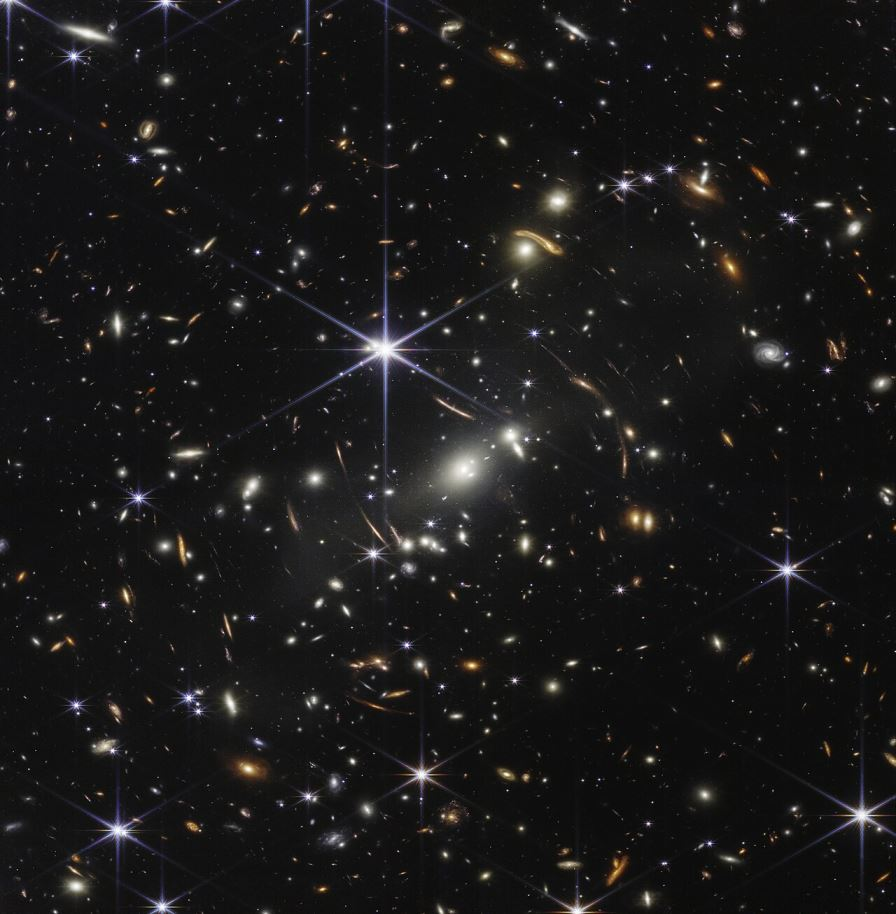
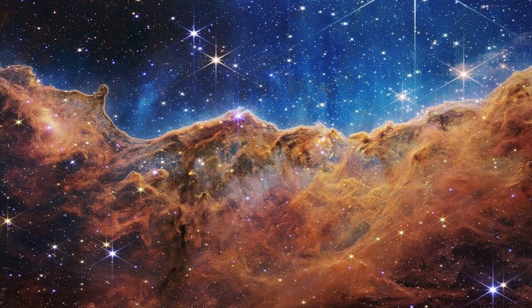
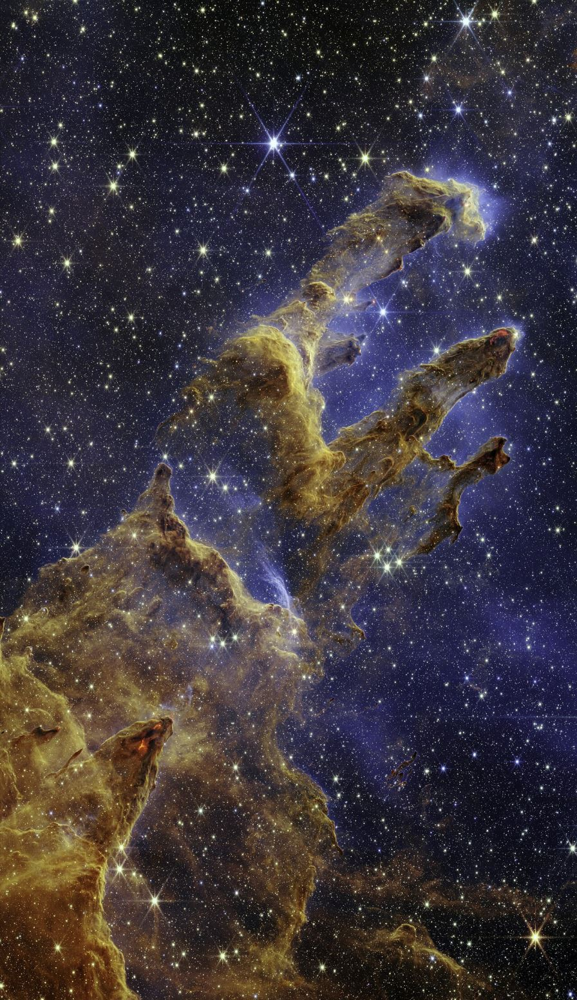
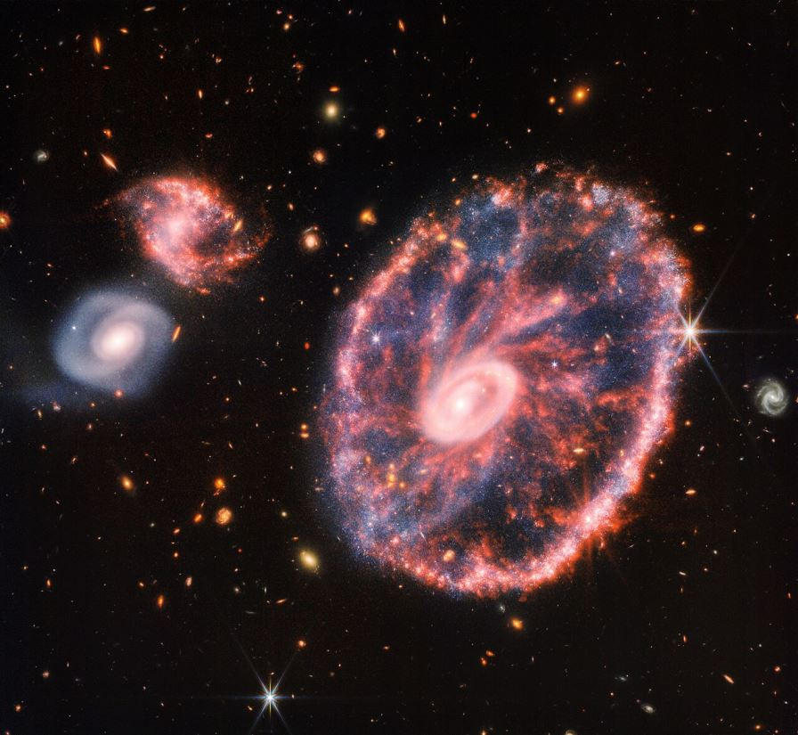
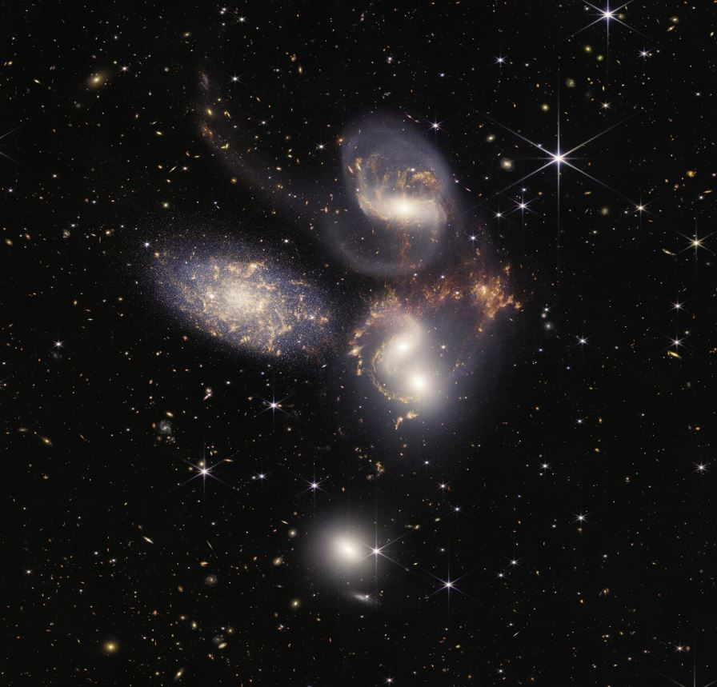
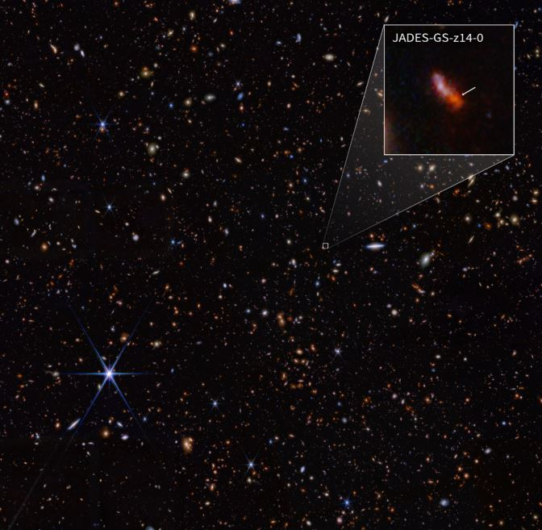
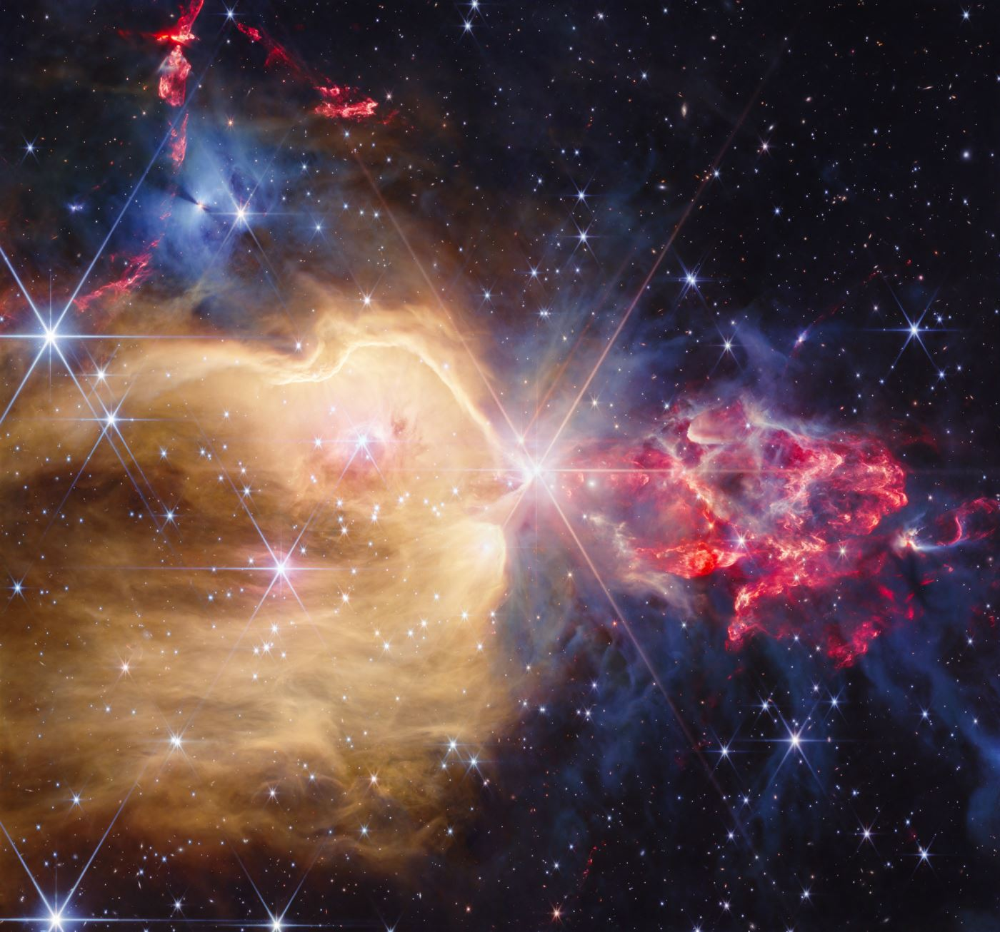

Webb is the most ambitious space telescope ever launched. Built over 25 years at a cost of about $10 billion, it left Earth on 25 December 2021 atop an Ariane 5 — folded up like origami — and unfolded itself perfectly in space. It reached its observing post a month later and began rewriting astronomy on 12 July 2022.
Where is Webb?
Webb does not orbit the Earth. It sits at L2 — the second Sun–Earth Lagrange point — about 1.5 million kilometres beyond Earth, on the line from the Sun through the Earth. There, the gravity of the Sun and Earth balance in just the right way for a spacecraft to "hover" with minimal effort: Webb orbits the Sun, drifting in a slow halo loop about as wide as the Moon's orbit, one loop every six months, with small station-keeping corrections.
Why go so far? Because at L2 the Sun, Earth and Moon all sit in the same direction. Webb's tennis-court-sized sunshield can block all three at once — giving the telescope a permanent night, a stable deep freeze, and a 24/7 view of the sky. The price: Webb is four times farther than the Moon, and no repair mission can ever reach it. Everything had to work the first time. It did.
Status (October 2026): active, in full science operations. Recent work includes measuring the host galaxy of the most distant fast radio burst ever found (FRB 20240304B, 3 billion years after the Big Bang), capturing newborn stars and jets in NGC 7129, detecting methane on the interstellar comet 3I/ATLAS, and discovering a new moon orbiting Uranus.
The machine
| Specification | Value |
|---|---|
| Launch | 25 Dec 2021, Ariane 5, Kourou — L2 arrival 24 Jan 2022 |
| Mirror | 6.5 m, 18 hexagonal segments; 25.4 m² collecting area; focal length 131.4 m folded |
| Sunshield | 21.2 × 14.2 m — five Kapton layers, aluminium and doped-silicon coatings |
| Mass | ~6,200 kg spacecraft |
| Wavelength range | 0.6–28.5 µm — orange visible light to deep infrared |
| Instruments | NIRCam (imaging), NIRSpec (spectroscopy), MIRI (mid-infrared, cryocooled below 7 K), NIRISS (transits), FGS (pointing) |
| Partners | NASA, ESA, CSA — prime contractor Northrop Grumman |
What Webb has seen

- The earliest galaxies — Webb's main mission. The current record holder is MoM-z14 at redshift 14.44 — light from about 280 million years after the Big Bang (May 2025). Its predecessor, JADES-GS-z14-0 (z = 14.32, 2024), was the first galaxy found to be unexpectedly bright and mature for such an early age — a finding that made theorists very busy.
- Exoplanet atmospheres — first clear carbon dioxide detection, in WASP-39 b (2022), plus sulphur dioxide and evidence of photochemistry. K2-18 b showed methane and CO2 (2023), and a 2025 hint of dimethyl sulphide — a gas associated with life on Earth — remains hotly debated. Webb also showed TRAPPIST-1 b and c probably have no thick atmospheres.
- The Pillars of Creation — the Eagle Nebula's famous columns, in an infrared portrait that revealed the stars being born inside them (October 2022).
- The Cartwheel Galaxy — a ring galaxy reshaped by a head-on collision, 500 million light-years away (August 2022).
- Stephan's Quintet — four interacting galaxies captured in a single image of over 150 million pixels (July 2022).
The gallery





